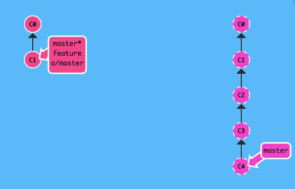
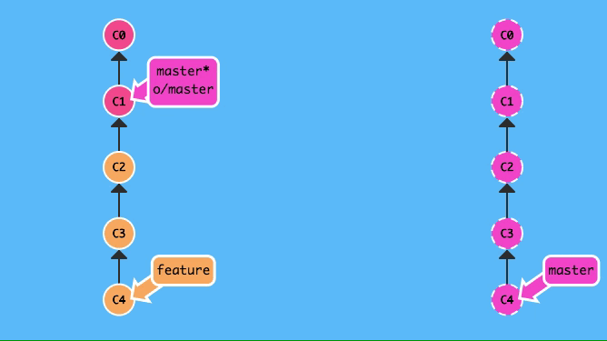

初看pull命令，当我们运行git pull的时候，似乎像是将当前本地分支所跟踪的远程分支的新内容下载至当前的本地分支上，而它有别于fetch，git fetch更像是刷新一下远端的分支的新提交信息，而并没有真正的下载所有的新内容。
但是实际上，并不是这样的。
git fetch本身就是一个下载命令，但是fetch只会更新本地的远端分支，也就是诸如origin/master, origin/feature等带有远程仓库前缀的分支，所有的远端分支的引用信息被存在.git/refs/remotes/里，而这些分支本地的操作人是不带有写权限的，所以你不能checkout到它们之上，更无法在远端分支上进行commit, merge, rebase, revert, reset等带有“写”性质的操作。
尽管如此，远端分支也不仅仅只是一个仅有历史信息的列表，在它的提交历史里的所有提交对象它都包含，并且拥有每个提交最终所指向的内容，所以无论是新改动还是新文件，在本地运行git fetch命令以后，它们就已经被下载下来了，并非仅仅加载提交信息，在运行了fetch命令以后，我们可以再使用merge命令将任意的远程分支合并到当前分支来。
pull命令的表现实际就是fetch命令和merge命令的集合。首先假设你当前在master分支上工作，并且该分支追踪着远端origin的master分支，直接运行git pull，git会首先利用fetch命令下载origin上的master分支的新提交，然后再用git merge origin/master命令来将新下载的提交合并到本地master分支上。
所以说，git pull并非唯一指定的下载命令，而是由fetch和merge命令结合组成的命令，fetch才是git里真正的下载命令。
但这也只是git pull的默认行为，可以通过加入参数--rebase来将pull的默认merge行为改成rebase。
git pull --rebasefetch命令后面可以加上远端名，甚至可以指定分支。大概长这样：
git fetch [remote name] [[remote branch]:(local branch)]注：中括号内的参数是可选的，小括号内的参数是必填的
如果你不指定远端的话，fetch会下载默认的远端上的所有的新的分支及提交到本地上；但如果你指定了远端的话，你还可以选择是否指定分支来进一步细化要让git去下载的内容。并且，如上命令所示，你甚至可以让非指定的本地分支所跟踪的远程分支的内容下载至你指定的本地分支上。并且，本地对应的远程分支不会有任何更新！
例子（虚线部分代表的是远端上的提交历史）：
git fetch origin master:feature
同时如果你指定了一条本地不存在的分支，那么git会先将这条本地分支创建出来，再将远端的指定分支的新内容下载到该分支上！
例子（虚线部分代表的是远端上的提交历史）：
git fetch origin master:foo
（这个例子是先创建了本地foo分支，再将origin上的master分支下载至本地foo分支）
这个命令甚至可以不指定远端的分支名，像这样：
git fetch origin :bar它的作用很奇特，它不会执行任何的下载功能，它只会在本地创建一条bar分支（如果本地不存在bar的话）。
push命令也和fetch一样，带有指定远端和分支的额外功能，甚至连命令都是相似的，唯一不同的地方就是它们的方向不同，毕竟fetch是下载，而push是上传嘛！
git push [remote name] [[local branch]:(remote branch)]和fetch相似，该命令会将制定的本地分支的新内容上传到指定远端的指定分支上。当指定了一条远端不存在的分支的时候，git则会在远端先创建该分支，然后将本地分支的内容传输至远端的指定分支上；但是最奇特的是（也是与fetch完全不同的），如果不指定本地分支的话，git则会删除远端的指定分支！
git push origin :master例如这个命令，是会导致远端的master分支被删除的！
pull命令也有如上形式的命令：
git pull [remote name] [[remote branch]: (local branch)]但是正如前面我所提到的那样，pull就是fetch和merge的组合。倘若你执行如下命令：
git pull origin master: feature就相当于：
git fetch origin master: feature & git merge feature也就是说，上述命令相当于将远端origin上的master分支的新内容下载至本地的feature分支，紧接着再将feature分支的内容合并到当前所在的分支。
而如若不指定远程分支，则该pull命令的表现和fetch是完全一致的，都是仅在当前HEAD引用所指向的commit创建一条对应名字的本地分支。
回顾了这个系列的上一篇文章，讲的是分支的合并与回滚操作之中，那些作用相似的命令。而在这篇里，则说几个用于分支上的高级操作，同样，他们之间也有着或多或少的相似性，容易混淆或者记错，在这里做下记录，并且对比他们的差异。 说到微调分支的历史，交互式rebase和cherry-pick无疑就是用于这个功能中的佼佼者，它们可以篡改分支的历史（毫无疑问），详细的说，它们能够遴选某个提交而舍弃不需要的提交，也可以更改提交的顺序。总之，如果能灵活运用的话，它们的功能是相当强大的。 交互式rebase在git……
继续阅读